Candidate List 20260327 Previous Day Next Day Section 1: New Sources (age<1d) Cosmological Afterglow
Section 2: Old (1-5d) sources observed last night placeholder
Section 1: New Afterglow/FBOT Cands Last Night (3)
1. ZTF26aaqdngq (Afterglow?) [Back to Top] [Share] [Trigger Swift] [Fritz ] [Lasair ]RA, Dec: 131.06023, -16.02514 8h44m14.45s, -16d-1m-30.52sGalactic (l, b): 241.05896, 16.16193 ext(g-r) = 0.073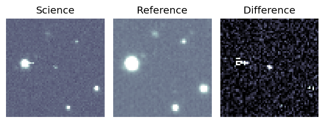
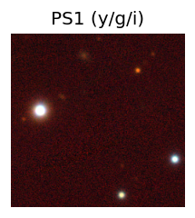
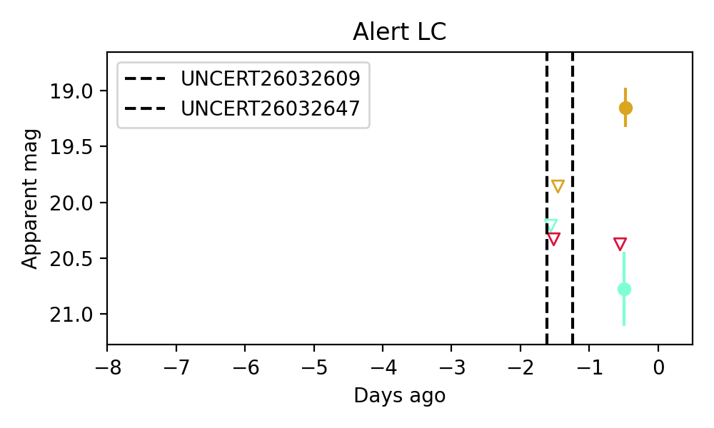
Consistent with synchrotron, g-r>0!
2. ZTF26aaqdyeo (Afterglow?) [Back to Top] [Share] [Trigger Swift] [Fritz ] [Lasair ]RA, Dec: 154.75565, 20.7304 10h19m1.36s, 20d43m49.45sGalactic (l, b): 214.97119, 54.72499 ext(g-r) = 0.024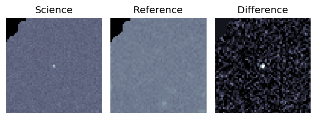
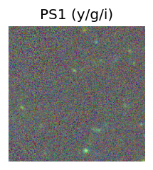
LegacySurvey: 1 sources in 3 arcsec Closest: d = 9.86 arcsec, 8.1 deg (east of north) photoz=0.71 (68% bounds 0.68, 0.76), type=EXP peak abs mag = -23.76 (68% bounds -23.62, -23.92) 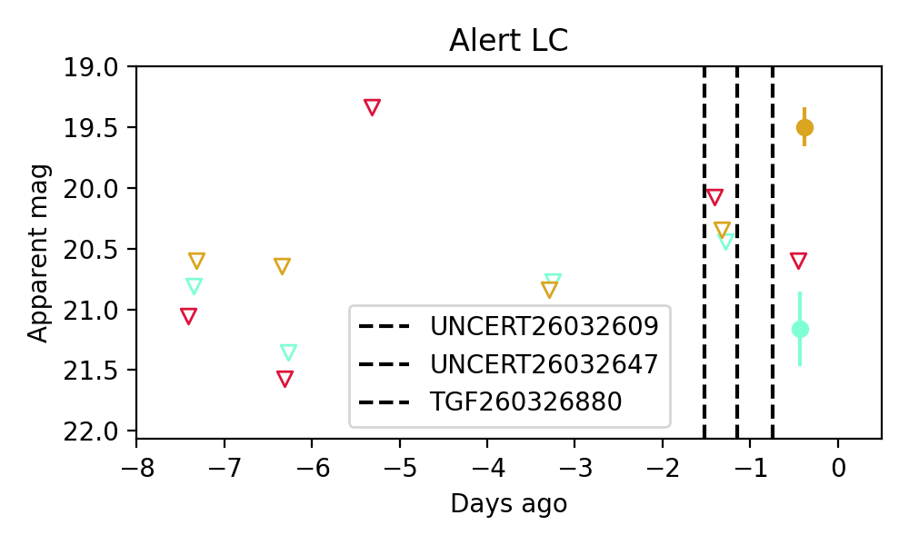
Consistent with synchrotron, g-r>0!
3. ZTF26aaqebzl (Afterglow?) [Back to Top] [Share] [Trigger Swift] [Fritz ] [Lasair ]RA, Dec: 149.07773, -12.02818 9h56m18.65s, -12d-1m-41.45sGalactic (l, b): 249.79689, 32.23705 ext(g-r) = 0.062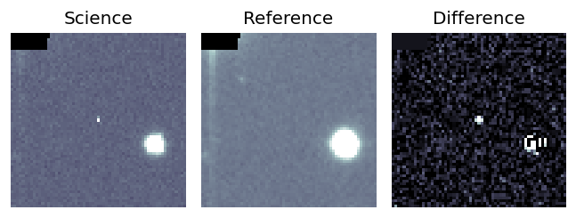
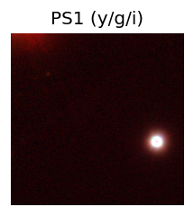
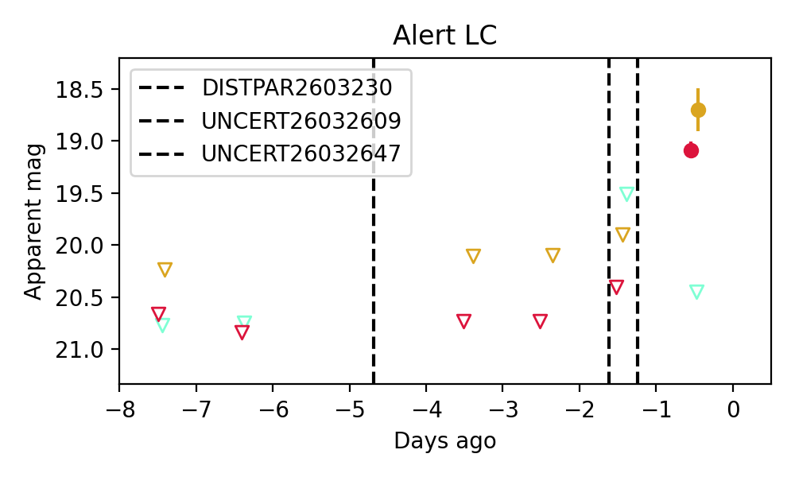
Consistent with synchrotron, g-r>0!
Section 2: Older Sources Observed Last Night (19)
0. ZTF26aanrcbg (FBOT?) [Back to Top] [Share] [Trigger Swift] [Fritz ] [Lasair ]RA, Dec: 189.95274, 8.34121 12h39m48.66s, 8d20m28.37sGalactic (l, b): 294.06101, 71.01243 ext(g-r) = 0.027peak abs mag = -20.09 LegacySurvey: 1 sources in 3 arcsec Closest: d = 0.18 arcsec, 285.0 deg (east of north) photoz=0.13 (68% bounds 0.11, 0.16), type=SER peak abs mag = -19.33 (68% bounds -18.96, -19.76) Consistent with synchrotron, g-r>0!
1. ZTF26aaocyjb (Afterglow?) [Back to Top] [Share] [Trigger Swift] [Fritz ] [Lasair ]RA, Dec: 188.03834, 48.52223 12h32m9.20s, 48d31m20.04sGalactic (l, b): 131.58344, 68.28079 ext(g-r) = 0.016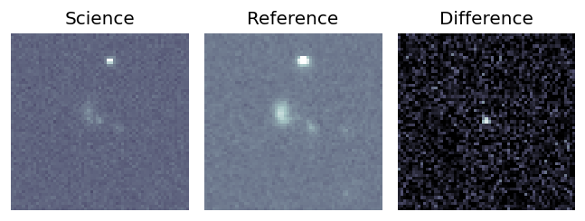
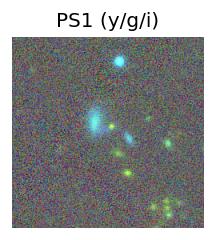
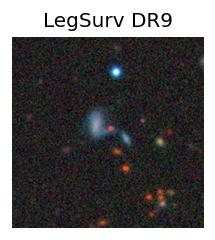
peak abs mag = -23.95 LegacySurvey: 1 sources in 3 arcsec Closest: d = 0.70 arcsec, 82.3 deg (east of north) photoz=0.05 (68% bounds 0.01, 0.27), type=EXP peak abs mag = -18.18 (68% bounds -15.15, -22.26) 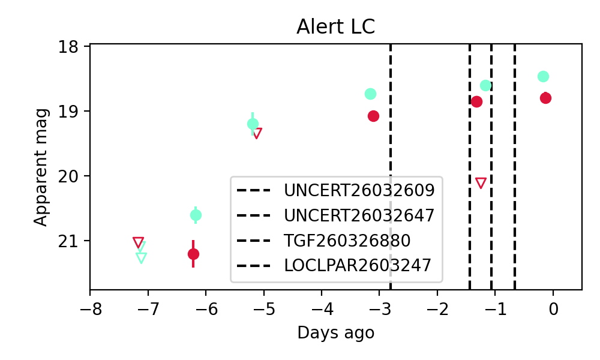
2. ZTF26aaohbqp (Afterglow?) [Back to Top] [Share] [Trigger Swift] [Fritz ] [Lasair ]RA, Dec: 261.65676, -13.27637 17h26m37.62s, -13d-16m-34.92sGalactic (l, b): 11.02521, 12.03811 ext(g-r) = 0.617PS1: 1 source in 3 arcsec Closest: d = 6.56 arcsec photoz=0.66+/-0.35 peak abs mag = -25.73
3. ZTF26aaovlst (FBOT?) [Back to Top] [Share] [Trigger Swift] [Fritz ] [Lasair ]RA, Dec: 186.60897, 8.3937 12h26m26.15s, 8d23m37.31sGalactic (l, b): 284.24769, 70.35314 ext(g-r) = 0.023peak abs mag = -23.06 LegacySurvey: 1 sources in 3 arcsec Closest: d = 0.12 arcsec, 167.5 deg (east of north) photoz=0.08 (68% bounds 0.03, 0.19), type=DEV peak abs mag = -18.14 (68% bounds -15.95, -20.28) Consistent with synchrotron, g-r>0!
4. ZTF26aapftqo (Afterglow?) [Back to Top] [Share] [Trigger Swift] [Fritz ] [Lasair ]RA, Dec: 183.34399, 30.46941 12h13m22.56s, 30d28m9.89sGalactic (l, b): 188.8479, 81.0211 ext(g-r) = 0.019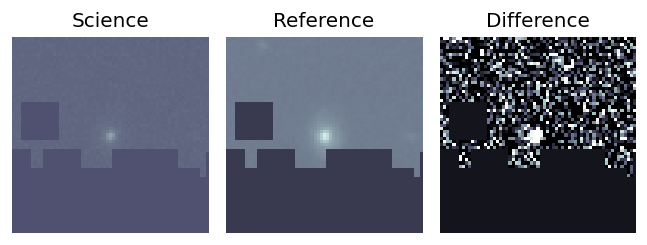
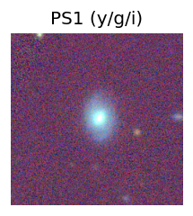
peak abs mag = -18.43 LegacySurvey: 1 sources in 3 arcsec Closest: d = 0.69 arcsec, 257.1 deg (east of north) photoz=0.1 (68% bounds 0.09, 0.11), type=DEV peak abs mag = -19.15 (68% bounds -18.99, -19.3) 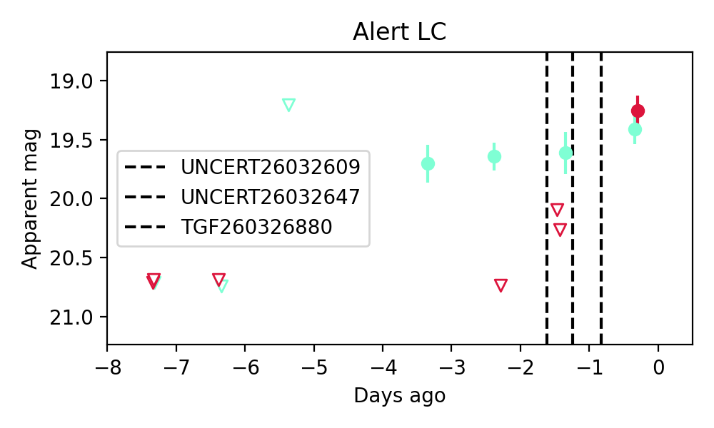
Consistent with synchrotron, g-r>0!
5. ZTF26aapgvkd (FBOT?) [Back to Top] [Share] [Trigger Swift] [Fritz ] [Lasair ]RA, Dec: 231.2836, 13.34003 15h25m8.06s, 13d20m24.10sGalactic (l, b): 19.69478, 51.59515 ext(g-r) = 0.051peak abs mag = -24.83 LegacySurvey: 1 sources in 3 arcsec Closest: d = 0.19 arcsec, 50.2 deg (east of north) photoz=0.12 (68% bounds 0.07, 0.39), type=EXP peak abs mag = -21.33 (68% bounds -20.22, -24.2)
6. ZTF26aaplvub (FBOT?) [Back to Top] [Share] [Trigger Swift] [Fritz ] [Lasair ]RA, Dec: 115.58341, 61.00076 7h42m20.02s, 61d 0m2.73sGalactic (l, b): 155.87714, 29.59375 ext(g-r) = 0.061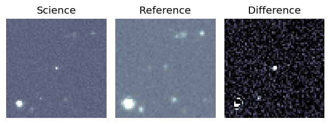
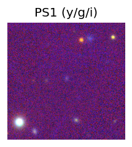
LegacySurvey: 1 sources in 3 arcsec Closest: d = 0.88 arcsec, 12.1 deg (east of north) photoz=0.22 (68% bounds 0.13, 0.32), type=REX peak abs mag = -20.16 (68% bounds -18.93, -21.11) 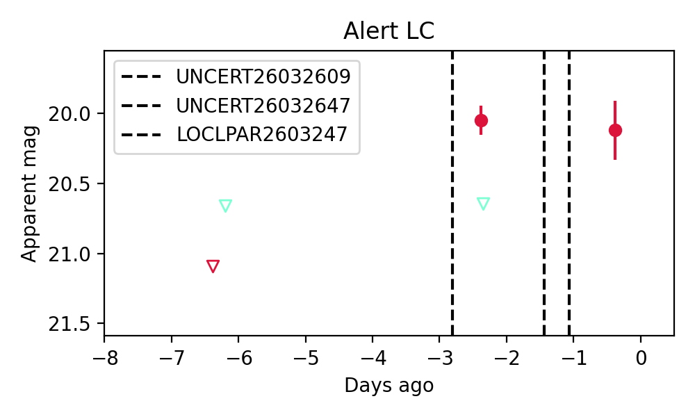
7. ZTF26aapunzq (Afterglow?) [Back to Top] [Share] [Trigger Swift] [Fritz ] [Lasair ]RA, Dec: 111.55101, 1.30566 7h26m12.24s, 1d18m20.39sGalactic (l, b): 215.74781, 8.32834 ext(g-r) = 0.215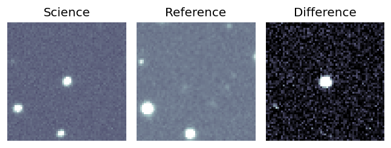
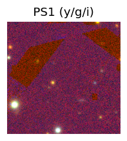
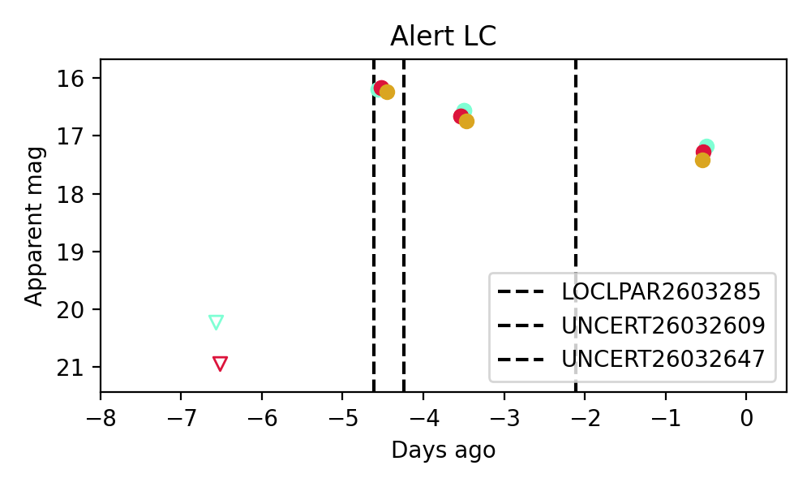
8. ZTF26aapuqvh (FBOT?) [Back to Top] [Share] [Trigger Swift] [Fritz ] [Lasair ]RA, Dec: 128.52773, -13.95028 8h34m6.66s, -13d-57m-0.99sGalactic (l, b): 237.84317, 15.31991 ext(g-r) = 0.061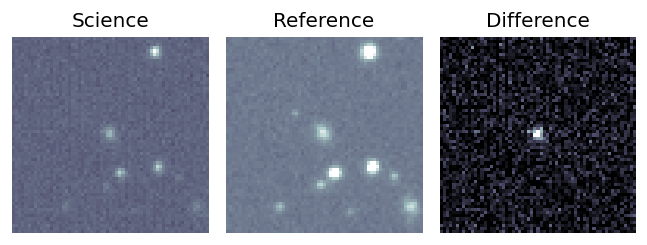
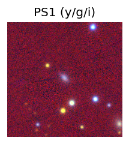
PS1: 1 source in 3 arcsec Closest: d = 0.65 arcsec photoz=0.13+/-0.04 peak abs mag = -20.56 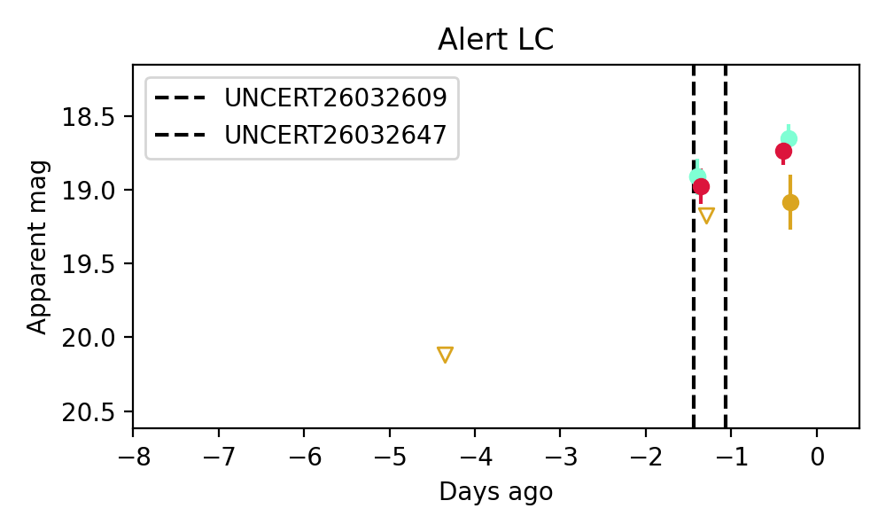
9. ZTF26aapwjqd (FBOT?) [Back to Top] [Share] [Trigger Swift] [Fritz ] [Lasair ]RA, Dec: 166.35009, -16.85616 11h 5m24.02s, -16d-51m-22.17sGalactic (l, b): 269.56227, 39.04841 ext(g-r) = 0.049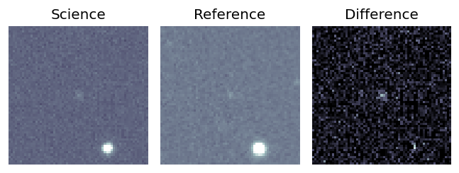
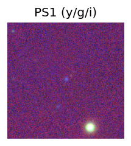
peak abs mag = -23.42 PS1: 1 source in 3 arcsec Closest: d = 0.28 arcsec photoz=0.84+/-0.11 peak abs mag = -24.34 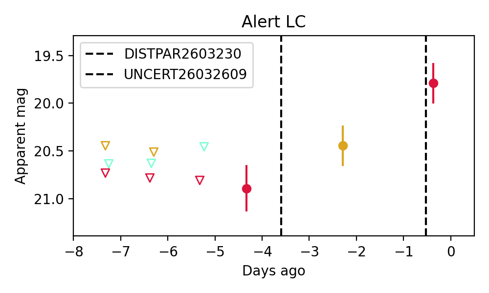
Consistent with synchrotron, g-r>0!
10. ZTF26aapxytw (FBOT?) [Back to Top] [Share] [Trigger Swift] [Fritz ] [Lasair ]RA, Dec: 186.7315, 0.73699 12h26m55.56s, 0d44m13.16sGalactic (l, b): 289.35207, 62.96065 WARNING: 3.35 deg from ecliptic plane ext(g-r) = 0.025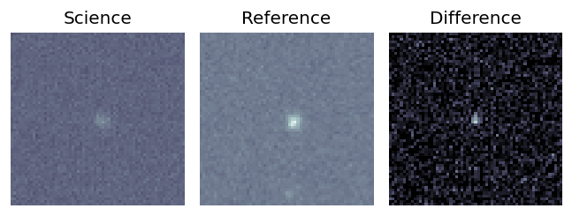
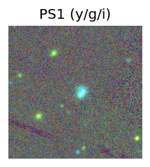
peak abs mag = -18.85 LegacySurvey: 1 sources in 3 arcsec Closest: d = 2.26 arcsec, 314.4 deg (east of north) photoz=0.14 (68% bounds 0.09, 0.61), type=EXP peak abs mag = -19.48 (68% bounds -18.46, -23.14) 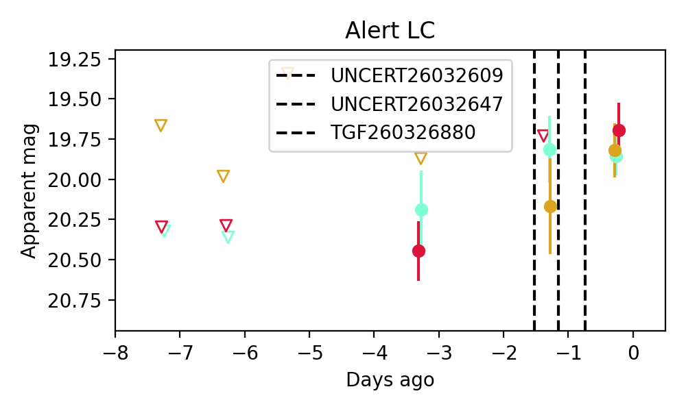
Consistent with synchrotron, g-r>0!
11. ZTF26aaqbzfh (FBOT?) [Back to Top] [Share] [Trigger Swift] [Fritz ] [Lasair ]RA, Dec: 93.60796, 51.32454 6h14m25.91s, 51d19m28.34sGalactic (l, b): 162.71895, 15.46041 ext(g-r) = 0.19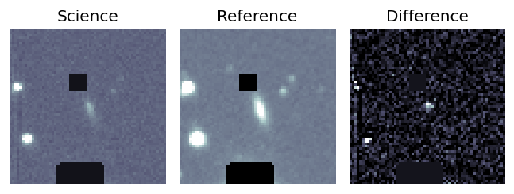
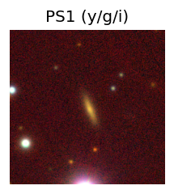
LegacySurvey: 1 sources in 3 arcsec Closest: d = 1.34 arcsec, 8.7 deg (east of north) photoz=0.49 (68% bounds 0.38, 0.53), type=EXP peak abs mag = -22.7 (68% bounds -22.04, -22.94) 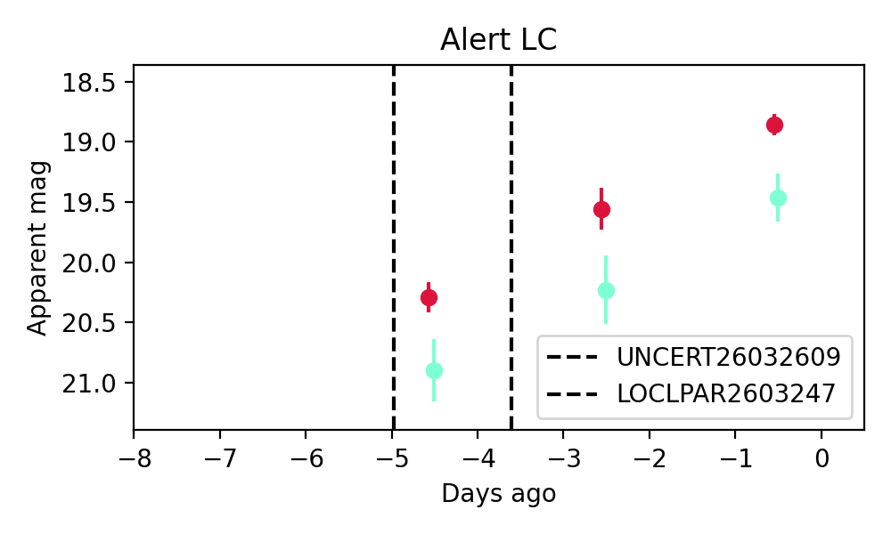
12. ZTF26aaqdtiv (FBOT?) [Back to Top] [Share] [Trigger Swift] [Fritz ] [Lasair ]RA, Dec: 154.20822, 21.25051 10h16m49.97s, 21d15m1.82sGalactic (l, b): 213.84916, 54.39566 ext(g-r) = 0.024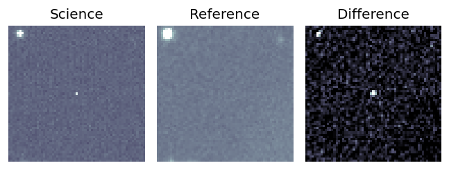
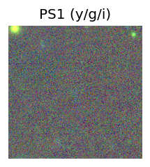
LegacySurvey: 1 sources in 3 arcsec Closest: d = 0.97 arcsec, 186.0 deg (east of north) photoz=0.6 (68% bounds 0.41, 0.8), type=REX peak abs mag = -23.15 (68% bounds -22.18, -23.93) 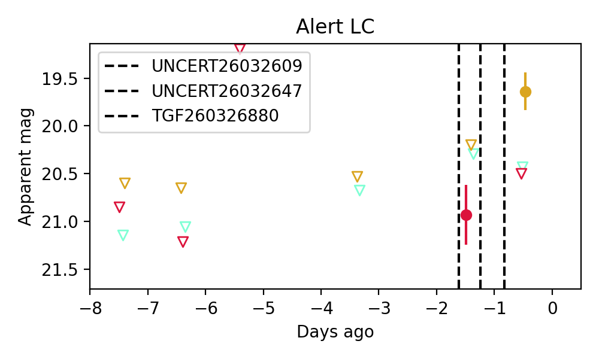
13. ZTF26aaqegzj (FBOT?) [Back to Top] [Share] [Trigger Swift] [Fritz ] [Lasair ]RA, Dec: 169.36492, -14.94868 11h17m27.58s, -14d-56m-55.26sGalactic (l, b): 271.63641, 42.14126 ext(g-r) = 0.051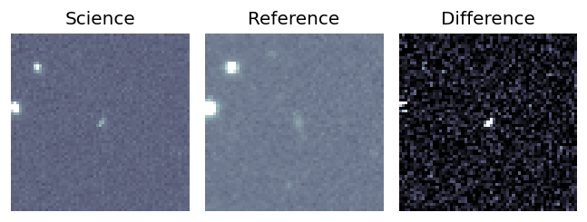
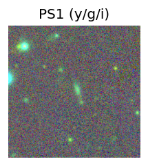
peak abs mag = -20.46 PS1: 1 source in 3 arcsec Closest: d = 1.47 arcsec photoz=0.13+/-0.05 peak abs mag = -19.73 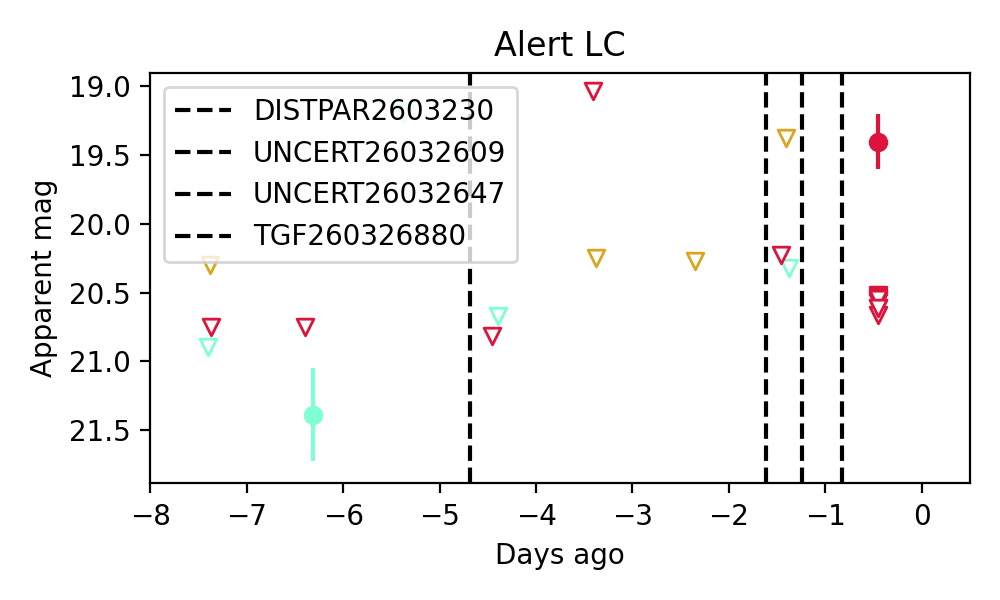
14. ZTF26aaqgyzl (Afterglow?) [Back to Top] [Share] [Trigger Swift] [Fritz ] [Lasair ]RA, Dec: 194.22079, 26.48424 12h56m52.99s, 26d29m3.26sGalactic (l, b): 5.31472, 88.62486 ext(g-r) = 0.014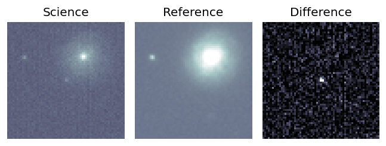
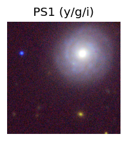
peak abs mag = -22.46 LegacySurvey: 1 sources in 3 arcsec Closest: d = 8.34 arcsec, 75.8 deg (east of north) photoz=0.81 (68% bounds 0.56, 0.98), type=PSF peak abs mag = -23.87 (68% bounds -22.9, -24.37) 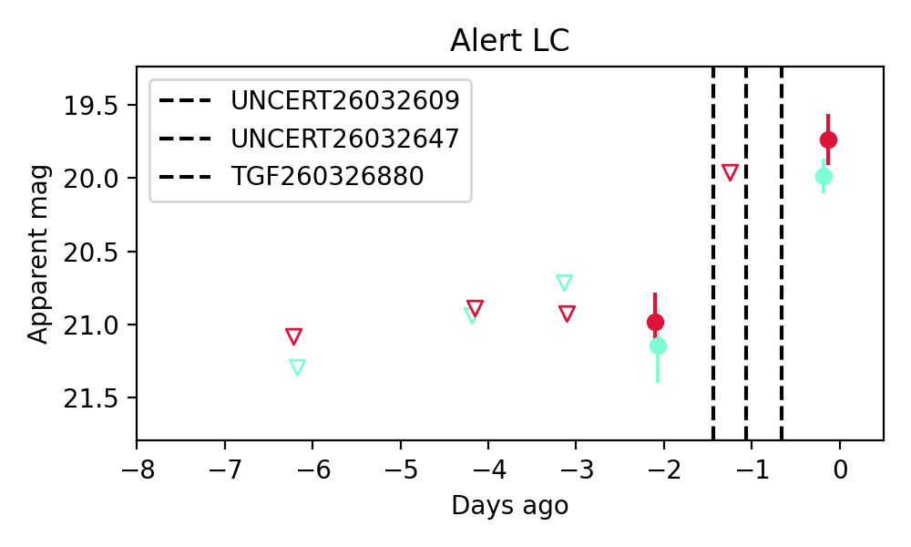
Consistent with synchrotron, g-r>0!
15. ZTF26aaqhghg (Afterglow?) [Back to Top] [Share] [Trigger Swift] [Fritz ] [Lasair ]RA, Dec: 197.86081, -2.97746 13h11m26.59s, -2d-58m-38.84sGalactic (l, b): 312.81203, 59.50998 WARNING: 4.25 deg from ecliptic plane ext(g-r) = 0.036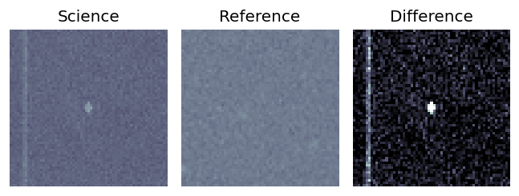
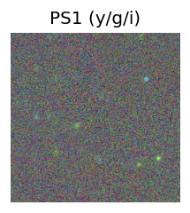
peak abs mag = -24.46 LegacySurvey: 1 sources in 3 arcsec Closest: d = 7.07 arcsec, 345.9 deg (east of north) photoz=0.65 (68% bounds 0.46, 0.93), type=REX peak abs mag = -24.37 (68% bounds -23.46, -25.3) 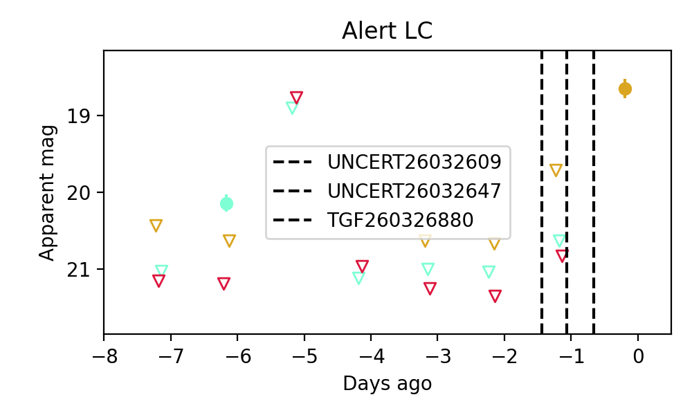
16. ZTF26aaqhghu (Afterglow?FBOT?) [Back to Top] [Share] [Trigger Swift] [Fritz ] [Lasair ]RA, Dec: 197.86058, -3.4009 13h11m26.54s, -3d-24m-3.23sGalactic (l, b): 312.68553, 59.09149 WARNING: 3.86 deg from ecliptic plane ext(g-r) = 0.029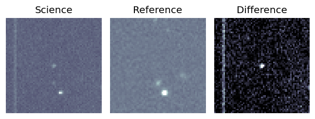
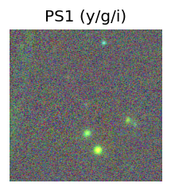
peak abs mag = -21.93 LegacySurvey: 1 sources in 3 arcsec Closest: d = 0.30 arcsec, 101.0 deg (east of north) photoz=0.45 (68% bounds 0.29, 0.6), type=REX peak abs mag = -22.88 (68% bounds -21.78, -23.65) 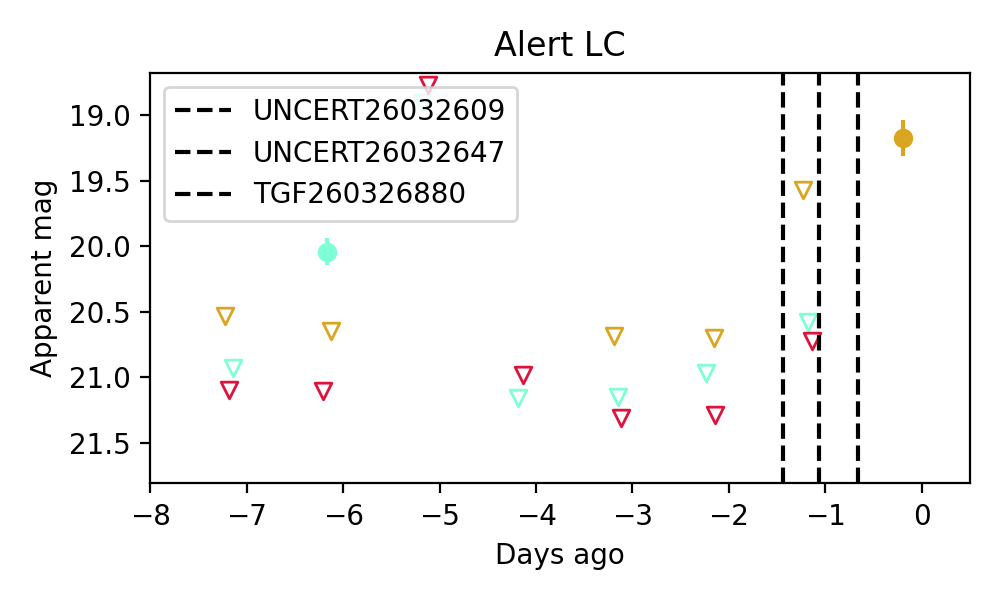
17. ZTF26aaqiijz (FBOT?) [Back to Top] [Share] [Trigger Swift] [Fritz ] [Lasair ]RA, Dec: 202.5031, 66.04512 13h30m0.74s, 66d 2m42.42sGalactic (l, b): 116.77789, 50.61972 ext(g-r) = 0.022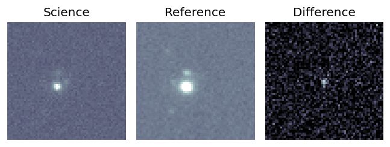
LegacySurvey: 1 sources in 3 arcsec Closest: d = 1.98 arcsec, 88.3 deg (east of north) photoz=0.3 (68% bounds 0.04, 0.46), type=EXP peak abs mag = -20.93 (68% bounds -16.36, -21.98) Consistent with synchrotron, g-r>0!
18. ZTF26aaqipeh (FBOT?) [Back to Top] [Share] [Trigger Swift] [Fritz ] [Lasair ]RA, Dec: 261.32118, 70.0583 17h25m17.08s, 70d 3m29.89sGalactic (l, b): 100.78689, 32.68913 ext(g-r) = 0.037peak abs mag = -20.47 LegacySurvey: 1 sources in 3 arcsec Closest: d = 0.06 arcsec, 357.5 deg (east of north) photoz=0.38 (68% bounds 0.25, 0.55), type=REX peak abs mag = -21.31 (68% bounds -20.25, -22.25) Consistent with synchrotron, g-r>0!